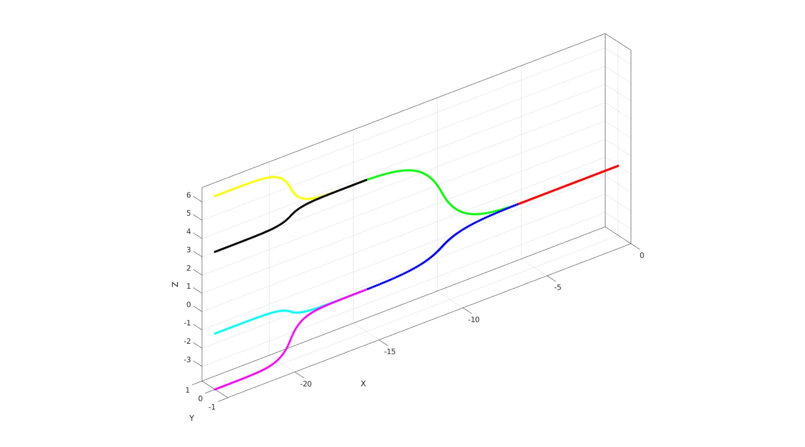
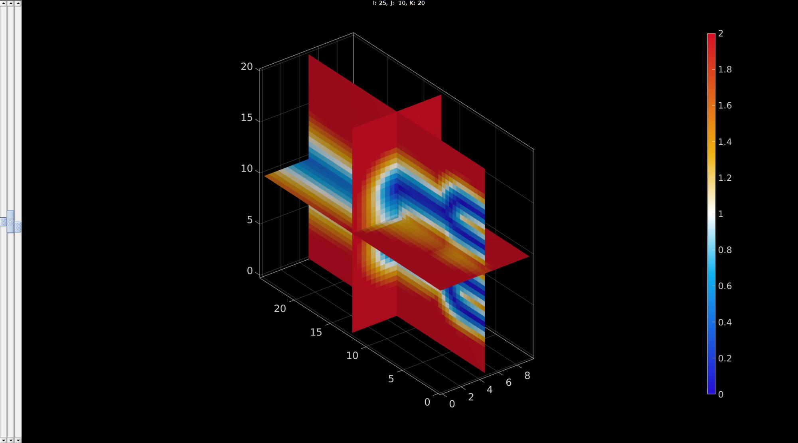

DEMO_febio_0036_sphere_branches_slide_body_force
Below is a demonstration for:
- Building geometry for a spherical blob with hexahedral elements which is pushed through a branched network. This demo consists off:
- Defining the boundary conditions
- Coding the febio structure
- Running the model
- Importing and visualizing the displacement results
Contents
Keywords
- febio_spec version 4.0
- febio, FEBio
- blood clot
- contact, sliding, friction
- rigid body constraints
- hexahedral elements, hex8
- quadrilaterl elements, quad4
- shell elements
- sphere
- hyperelastic, Ogden
- displacement logfile
- stress logfile
clear; close all; clc;
Plot settings
fontSize=15; faceAlpha1=0.8; faceAlpha2=0.3; markerSize=40; lineWidth=3; cMap=blood(250);
Control parameters
% Path names defaultFolder = fileparts(fileparts(mfilename('fullpath'))); savePath=fullfile(defaultFolder,'data','temp'); % Defining file names febioFebFileNamePart='tempModel'; febioFebFileName=fullfile(savePath,[febioFebFileNamePart,'.feb']); %FEB file name febioLogFileName=[febioFebFileNamePart,'.txt']; %FEBio log file name febioLogFileName_disp=[febioFebFileNamePart,'_disp_out.txt']; %Log file name for exporting displacement % febioLogFileName_force=[febioFebFileNamePart,'_force_out.txt']; %Log file name for exporting force numElementsMantel=5; sphereRadius=3; pointSpacing=(sphereRadius/6); voxelSize=pointSpacing*ones(1,3); w=sphereRadius*1.5; reduceFactor=2.75; contourLevel=1; % Material parameter set materialType=1; c1=1e-3; %Shear-modulus-like parameter m1=2; %Material parameter setting degree of non-linearity k_factor=10; %Bulk modulus factor k=c1*k_factor; %Bulk modulus g1=2; %Viscoelastic QLV proportional coefficient t1=150; %Viscoelastic QLV time coefficient %Setting material density (set artificially high in effort to dampen %oscilations and increase body force). materialDensity=1e-9*20000; %Density % FEA control settings timeTotal=2; %Total simulation time numTimeSteps=10; %Number of time steps desired step_size=timeTotal/numTimeSteps; max_refs=25; %Max reforms max_ups=0; %Set to zero to use full-Newton iterations opt_iter=15; %Optimum number of iterations max_retries=5; %Maximum number of retires dtmin=(timeTotal/numTimeSteps)/100; %Minimum time step size dtmax=timeTotal/(numTimeSteps); %Maximum time step size symmetric_stiffness=0; min_residual=1e-20; analysisType='DYNAMIC'; runMode='external';%'internal'; %Contact parameters contactPenalty=25; fric_coeff=0.25; laugon=0; minaug=1; maxaug=10; %Specifying load sphereVolume=4/3*(pi*sphereRadius^3); %Sphere Volume in mm^3 sphereMass=sphereVolume.*materialDensity; %Sphere mass in tonne sphereSectionArea=pi*sphereRadius^2; bodyLoadMagnitude=9.81*sphereMass*1000; forceBodyLoad=sphereMass.*bodyLoadMagnitude; stressBodyLoad=forceBodyLoad/sphereSectionArea;
Define branch curves
n=100; V1=[0 0 0; -2*sphereRadius 0 0]; V1=evenlySampleCurve(V1,n,'linear',0); x=linspace(1,-1,n)'; xx=nan(size(x)); f=4; if f==0 xx=x; else xx(x>=0) =(exp(-f*abs(x(x>0)))-1)./(exp(-f)-1); xx(x<0) =-(exp(-f*abs(x(x<0)))-1)./(exp(-f)-1); end xx=w/2.*xx; xx=-xx+w/2; x=x.*w; x=x+(min(V1(:,1)))+(-w); V2=[x zeros(size(x)) xx]; V2=evenlySampleCurve(V2,n,'linear',0); x=linspace(2,-2,n)'; xx=nan(size(x)); f=4; if f==0 xx=x; else xx(x>=0) =(exp(-f*abs(x(x>0)))-1)./(exp(-f)-1); xx(x<0) =-(exp(-f*abs(x(x<0)))-1)./(exp(-f)-1); end xx=w/4.*xx; xx=-xx+w/4; x=x.*w/2; x=x+(-w/2); V3=[x zeros(size(x)) xx]; V3=V3-V3(1,:); V4=V3; V3=V3+V2(end,:); V3=evenlySampleCurve(V3,n,'linear',0); V4(:,3)=-V4(:,3)/3; V4=V4+V2(end,:); V4=evenlySampleCurve(V4,n,'linear',0); V5=V2; V5(:,3)=-V5(:,3)/3; V6=V4; V6=V6-V6(1,:); V6(:,3)=-V6(:,3); V6=V6+V5(end,:); V7=V3; V7=V7-V7(1,:); V7(:,3)=-V7(:,3); V7=V7+V5(end,:);
cFigure; hold on; plotV(V1,'r.-','MarkerSize',15); plotV(V2,'g.-','MarkerSize',15); plotV(V3,'y.-','MarkerSize',15); plotV(V4,'k.-','MarkerSize',15); plotV(V5,'b.-','MarkerSize',15); plotV(V6,'c.-','MarkerSize',15); plotV(V7,'m.-','MarkerSize',15); axisGeom; drawnow;
r1=sphereRadius; %Inlet radius A1=r1^2*pi; %Inlet area A2=(A1*0.8); %First bifurcation inlet area r2=sqrt(A2/pi); %First bifurcation inlet radius A3=(A2/2); %area r3=sqrt(A3/pi); %radius A4=(A3/3); %area r4=sqrt(A4/pi); %radius E1=[(1:size(V1,1)-1)' (2:size(V1,1))']; E2=[(1:size(V2,1)-1)' (2:size(V2,1))']; E3=[(1:size(V3,1)-1)' (2:size(V3,1))']; E4=[(1:size(V4,1)-1)' (2:size(V4,1))']; E5=[(1:size(V5,1)-1)' (2:size(V5,1))']; E6=[(1:size(V6,1)-1)' (2:size(V6,1))']; E7=[(1:size(V7,1)-1)' (2:size(V7,1))']; C=[linspace(r1,r2,size(V1,1))';... linspace(r2,r3,size(V2,1))';... linspace(r3,r4,size(V3,1))';... linspace(r3,r4,size(V4,1))';... linspace(r2,r3,size(V5,1))';... linspace(r3,r4,size(V6,1))';... linspace(r3,r4,size(V7,1))']; [E,V]=joinElementSets({E1,E2,E3,E4,E5,E6,E7},{V1,V2,V3,V4,V5,V6,V7}); [E,V,ind1]=mergeVertices(E,V); C=C(ind1); % cPar.n=25; % [C]=patchSmooth(E,C,[],cPar);
cFigure;
gpatch(E,V,'none',C,0,3);
axisGeom;
drawnow;

x=min(V(:,1)):voxelSize:max(V(:,1)); y=min(V(:,2))-1.5*sphereRadius:voxelSize:max(V(:,2))+1.5*sphereRadius; z=min(V(:,3))-1.5*sphereRadius:voxelSize:max(V(:,3))+1.5*sphereRadius; [X,Y,Z]=ndgrid(x,y,z); V_grid=[X(:) Y(:) Z(:)]; [M_grid,indMin]=minDist(V_grid,V); M_grid=M_grid./C(indMin); M=reshape(M_grid,size(X));
vizStruct.colormap=warmcold(250);
vizStruct.clim=[0 contourLevel*2];
sv3(M,voxelSize,vizStruct);
camlight headlight;
 imOrigin=min(V_grid,[],1)-voxelSize/2;
controlPar_isosurface.nSub=[1 1 1];%round(max(v)/2./v); controlPar_isosurface.capOpt=0; %Option to cap open ended surfaces controlPar_isosurface.voxelSize=voxelSize; controlPar_isosurface.contourLevel=contourLevel; [Fi,Vi]=levelset2isosurface(M,controlPar_isosurface); %Get iso-surface % Fi=fliplr(Fi); %Invert face orientation Fi_sorted=sort(Fi,2); logicInvalid=any(diff(Fi_sorted,1,2)==0,2); Fi=Fi(~logicInvalid,:); [Fi,Vi]=patchCleanUnused(Fi,Vi); Vi=Vi(:,[2 1 3]); Vi=Vi+imOrigin; [Fi,Vi]=triSurfRemoveThreeConnect(Fi,Vi); [Fi,Vi]=patchCleanUnused(Fi,Vi);
Remesh using geomgram
optionStructGG.pointSpacing=pointSpacing*2;
[Fi,Vi]=ggremesh(Fi,Vi,optionStructGG);
optionStruct.maxAngleDeviation=10;
optionStruct.triangleConvert=1;
[Fi,Vi]=tri2quadGroupSplit(Fi,Vi,optionStruct);
Eb=patchBoundary(Fi);
controlPar_smooth.Method='HC';
controlPar_smooth.Alpha=0.1;
controlPar_smooth.Beta=0.5;
controlPar_smooth.n=150;
controlPar_smooth.RigidConstraints=unique(Eb(:));
[Vi]=patchSmooth(Fi,Vi,[],controlPar_smooth);
Vi=Vi-imOrigin; Vi=Vi(:,[2 1 3]); Eb=patchBoundary(Fi); gpatch(Fi,Vi,'w','k',1,2);

cFigure; gpatch(Fi,Vi,'w','k'); patchNormPlot(Fi,Vi); axisGeom; view(-90,0); camlight headlight; drawnow;

%Control settings cPar.sphereRadius=sphereRadius; cPar.coreRadius=sphereRadius.*0.75; cPar.numElementsCore=ceil(sphereRadius/pointSpacing); cPar.numElementsMantel=ceil((sphereRadius-cPar.coreRadius)/pointSpacing); cPar.makeHollow=0; cPar.outputStructType=2; %Creating sphere [meshStruct]=hexMeshSphere(cPar); %Access ouput E_blob=meshStruct.elements; %The elements V_blob=meshStruct.nodes; %The vertices Fb_blob=meshStruct.facesBoundary; %The boundary faces
%Create cut view hFig=cFigure; subplot(1,2,1); hold on; title('The hexahedral mesh sphere','FontSize',fontSize); gpatch(Fb_blob,V_blob,'r'); axisGeom(gca,fontSize); camlight headlight; hs=subplot(1,2,2); hold on; title('Cut view of solid mesh','FontSize',fontSize); optionStruct.hFig=[hFig hs]; gpatch(Fb_blob,V_blob,'kw','none',0.25); meshView(meshStruct,optionStruct); axisGeom(gca,fontSize); drawnow; drawnow;

Shift branch set
Vi=Vi(:,[2 1 3]); Vi=Vi+imOrigin;
Join model node sets
V=[V_blob; Vi; ]; F_tube=Fi+size(V_blob,1); F_tube=fliplr(F_tube); center_of_mass_tube=mean(Vi,1);
Visualizing model
cFigure; hold on; gtitle('Model components',fontSize); hl(1)=gpatch(Fb_blob,V,'rw','k',0.8); hl(2)=gpatch(F_tube,V,'bw','k',0.8); patchNormPlot(F_tube,V); legend(hl,{'Clot','Vessel'}); clear hl; axisGeom(gca,fontSize); camlight headlight; drawnow;

Get contact surfaces
F_contact_blob=Fb_blob;
Visualize contact surfaces
cFigure; hold on; title('Tube blob contact pair','fontsize',fontSize); hl(1)=gpatch(F_tube,V,'rw','k',1); patchNormPlot(F_tube,V); hl(2)=gpatch(F_contact_blob,V,'gw','k',1); patchNormPlot(F_contact_blob,V); legend(hl,{'Secondary','Primary'}); clear hl; axisGeom(gca,fontSize); camlight headlight; drawnow;

Defining the FEBio input structure
See also febioStructTemplate and febioStruct2xml and the FEBio user manual.
%Get a template with default settings [febio_spec]=febioStructTemplate; %febio_spec version febio_spec.ATTR.version='4.0'; %Module section febio_spec.Module.ATTR.type='solid'; %Control section febio_spec.Control.analysis=analysisType; febio_spec.Control.time_steps=numTimeSteps; febio_spec.Control.step_size=step_size; febio_spec.Control.solver.max_refs=max_refs; febio_spec.Control.solver.qn_method.max_ups=max_ups; febio_spec.Control.solver.symmetric_stiffness=symmetric_stiffness; febio_spec.Control.time_stepper.dtmin=dtmin; febio_spec.Control.time_stepper.dtmax=dtmax; febio_spec.Control.time_stepper.max_retries=max_retries; febio_spec.Control.time_stepper.opt_iter=opt_iter; %Material section materialName1='Material1'; febio_spec.Material.material{1}.ATTR.name=materialName1; switch materialType case 0 febio_spec.Material.material{1}.ATTR.type='Ogden unconstrained'; febio_spec.Material.material{1}.ATTR.id=1; febio_spec.Material.material{1}.c1=c1; febio_spec.Material.material{1}.m1=m1; febio_spec.Material.material{1}.c2=c1; febio_spec.Material.material{1}.m2=-m1; febio_spec.Material.material{1}.cp=k; febio_spec.Material.material{1}.density=materialDensity; case 1 %Viscoelastic part febio_spec.Material.material{1}.ATTR.type='viscoelastic'; febio_spec.Material.material{1}.ATTR.id=1; febio_spec.Material.material{1}.g1=g1; febio_spec.Material.material{1}.t1=t1; febio_spec.Material.material{1}.density=materialDensity; %Elastic part febio_spec.Material.material{1}.elastic{1}.ATTR.type='Ogden unconstrained'; febio_spec.Material.material{1}.elastic{1}.c1=c1; febio_spec.Material.material{1}.elastic{1}.m1=m1; febio_spec.Material.material{1}.elastic{1}.c2=c1; febio_spec.Material.material{1}.elastic{1}.m2=-m1; febio_spec.Material.material{1}.elastic{1}.cp=k; febio_spec.Material.material{1}.elastic{1}.density=materialDensity; end materialName2='Material2'; febio_spec.Material.material{2}.ATTR.name=materialName2; febio_spec.Material.material{2}.ATTR.type='rigid body'; febio_spec.Material.material{2}.ATTR.id=2; febio_spec.Material.material{2}.density=1; febio_spec.Material.material{2}.center_of_mass=center_of_mass_tube; %Mesh section % -> Nodes febio_spec.Mesh.Nodes{1}.ATTR.name='nodeSet_all'; %The node set name febio_spec.Mesh.Nodes{1}.node.ATTR.id=(1:size(V,1))'; %The node id's febio_spec.Mesh.Nodes{1}.node.VAL=V; %The nodel coordinates % -> Elements partName1='Part1'; febio_spec.Mesh.Elements{1}.ATTR.name=partName1; %Name of this part febio_spec.Mesh.Elements{1}.ATTR.type='hex8'; %Element type febio_spec.Mesh.Elements{1}.elem.ATTR.id=(1:1:size(E_blob,1))'; %Element id's febio_spec.Mesh.Elements{1}.elem.VAL=E_blob; %The element matrix partName2='Part2'; febio_spec.Mesh.Elements{2}.ATTR.name=partName2; %Name of this part febio_spec.Mesh.Elements{2}.ATTR.type='quad4'; %Element type febio_spec.Mesh.Elements{2}.elem.ATTR.id=size(E_blob,1)+(1:1:size(F_tube,1))'; %Element id's febio_spec.Mesh.Elements{2}.elem.VAL=F_tube; %The element matrix % -> Surfaces surfaceName1='contactSurface1'; febio_spec.Mesh.Surface{1}.ATTR.name=surfaceName1; febio_spec.Mesh.Surface{1}.quad4.ATTR.id=(1:1:size(F_tube,1))'; febio_spec.Mesh.Surface{1}.quad4.VAL=F_tube; surfaceName2='contactSurface2'; febio_spec.Mesh.Surface{2}.ATTR.name=surfaceName2; febio_spec.Mesh.Surface{2}.quad4.ATTR.id=(1:1:size(F_contact_blob,1))'; febio_spec.Mesh.Surface{2}.quad4.VAL=F_contact_blob; % -> Surface pairs contactPairName='Contact1'; febio_spec.Mesh.SurfacePair{1}.ATTR.name=contactPairName; febio_spec.Mesh.SurfacePair{1}.primary=surfaceName2; febio_spec.Mesh.SurfacePair{1}.secondary=surfaceName1; %MeshDomains section febio_spec.MeshDomains.SolidDomain.ATTR.name=partName1; febio_spec.MeshDomains.SolidDomain.ATTR.mat=materialName1; febio_spec.MeshDomains.ShellDomain.ATTR.name=partName2; febio_spec.MeshDomains.ShellDomain.ATTR.mat=materialName2; %Loads section % -> Body load febio_spec.Loads.body_load.ATTR.type='const'; febio_spec.Loads.body_load.x.ATTR.lc=1; febio_spec.Loads.body_load.x.VAL=bodyLoadMagnitude; %Rigid section % ->Rigid body fix boundary conditions febio_spec.Rigid.rigid_bc{1}.ATTR.name='RigidFix_1'; febio_spec.Rigid.rigid_bc{1}.ATTR.type='rigid_fixed'; febio_spec.Rigid.rigid_bc{1}.rb=2; febio_spec.Rigid.rigid_bc{1}.Rx_dof=1; febio_spec.Rigid.rigid_bc{1}.Ry_dof=1; febio_spec.Rigid.rigid_bc{1}.Rz_dof=1; febio_spec.Rigid.rigid_bc{1}.Ru_dof=1; febio_spec.Rigid.rigid_bc{1}.Rv_dof=1; febio_spec.Rigid.rigid_bc{1}.Rw_dof=1; %Contact section febio_spec.Contact.contact{1}.ATTR.type='sliding-elastic'; febio_spec.Contact.contact{1}.ATTR.surface_pair=contactPairName; febio_spec.Contact.contact{1}.two_pass=0; febio_spec.Contact.contact{1}.laugon=laugon; febio_spec.Contact.contact{1}.tolerance=0.2; febio_spec.Contact.contact{1}.gaptol=0; febio_spec.Contact.contact{1}.minaug=minaug; febio_spec.Contact.contact{1}.maxaug=maxaug; febio_spec.Contact.contact{1}.search_tol=0.01; febio_spec.Contact.contact{1}.search_radius=0.1*sqrt(sum((max(V,[],1)-min(V,[],1)).^2,2)); febio_spec.Contact.contact{1}.symmetric_stiffness=0; febio_spec.Contact.contact{1}.auto_penalty=1; febio_spec.Contact.contact{1}.penalty=contactPenalty; febio_spec.Contact.contact{1}.fric_coeff=fric_coeff; %LoadData section % -> load_controller febio_spec.LoadData.load_controller{1}.ATTR.name='LC_1'; febio_spec.LoadData.load_controller{1}.ATTR.id=1; febio_spec.LoadData.load_controller{1}.ATTR.type='loadcurve'; febio_spec.LoadData.load_controller{1}.interpolate='LINEAR'; %febio_spec.LoadData.load_controller{1}.extend='CONSTANT'; febio_spec.LoadData.load_controller{1}.points.pt.VAL=[0 0; 1 1]; %Output section % -> log file febio_spec.Output.logfile.ATTR.file=febioLogFileName; febio_spec.Output.logfile.node_data{1}.ATTR.file=febioLogFileName_disp; febio_spec.Output.logfile.node_data{1}.ATTR.data='ux;uy;uz'; febio_spec.Output.logfile.node_data{1}.ATTR.delim=','; % Plotfile section febio_spec.Output.plotfile.compression=0;
Quick viewing of the FEBio input file structure
The febView function can be used to view the xml structure in a MATLAB figure window.
febView(febio_spec); %Viewing the febio file
Exporting the FEBio input file
Exporting the febio_spec structure to an FEBio input file is done using the febioStruct2xml function.
febioStruct2xml(febio_spec,febioFebFileName); %Exporting to file and domNode
Running the FEBio analysis
To run the analysis defined by the created FEBio input file the runMonitorFEBio function is used. The input for this function is a structure defining job settings e.g. the FEBio input file name. The optional output runFlag informs the user if the analysis was run succesfully.
febioAnalysis.run_filename=febioFebFileName; %The input file name febioAnalysis.run_logname=febioLogFileName; %The name for the log file febioAnalysis.disp_on=1; %Display information on the command window febioAnalysis.runMode=runMode; [runFlag]=runMonitorFEBio(febioAnalysis);%START FEBio NOW!!!!!!!!
%%%%%%%%%%%%%%%%%%%%%%%%%%%%%%%%%%%%%%%%%%%%%%%%%%%%%%%%%%%%%%%%%%%%%%%%%%%
--------> RUNNING/MONITORING FEBIO JOB <-------- 20-Apr-2023 18:02:40
FEBio path: /home/kevin/FEBioStudio2/bin/febio4
# Attempt removal of existing log files 20-Apr-2023 18:02:40
* Removal succesful 20-Apr-2023 18:02:40
# Attempt removal of existing .xplt files 20-Apr-2023 18:02:40
* Removal succesful 20-Apr-2023 18:02:40
# Starting FEBio... 20-Apr-2023 18:02:40
Max. total analysis time is: Inf s
* Waiting for log file creation 20-Apr-2023 18:02:40
Max. wait time: 30 s
* Log file found. 20-Apr-2023 18:02:40
# Parsing log file... 20-Apr-2023 18:02:40
number of iterations : 4 20-Apr-2023 18:02:41
number of reformations : 4 20-Apr-2023 18:02:41
------- converged at time : 0.2 20-Apr-2023 18:02:41
number of iterations : 6 20-Apr-2023 18:02:42
number of reformations : 6 20-Apr-2023 18:02:42
------- converged at time : 0.4 20-Apr-2023 18:02:42
number of iterations : 6 20-Apr-2023 18:02:43
number of reformations : 6 20-Apr-2023 18:02:43
------- converged at time : 0.6 20-Apr-2023 18:02:43
number of iterations : 7 20-Apr-2023 18:02:43
number of reformations : 7 20-Apr-2023 18:02:43
------- converged at time : 0.8 20-Apr-2023 18:02:43
number of iterations : 7 20-Apr-2023 18:02:44
number of reformations : 7 20-Apr-2023 18:02:44
------- converged at time : 1 20-Apr-2023 18:02:44
number of iterations : 8 20-Apr-2023 18:02:45
number of reformations : 8 20-Apr-2023 18:02:45
------- converged at time : 1.2 20-Apr-2023 18:02:45
number of iterations : 9 20-Apr-2023 18:02:47
number of reformations : 9 20-Apr-2023 18:02:47
------- converged at time : 1.36667 20-Apr-2023 18:02:47
number of iterations : 7 20-Apr-2023 18:02:49
number of reformations : 7 20-Apr-2023 18:02:49
------- converged at time : 1.42444 20-Apr-2023 18:02:49
number of iterations : 8 20-Apr-2023 18:02:51
number of reformations : 8 20-Apr-2023 18:02:51
------- converged at time : 1.48193 20-Apr-2023 18:02:51
number of iterations : 9 20-Apr-2023 18:02:53
number of reformations : 9 20-Apr-2023 18:02:53
------- converged at time : 1.56791 20-Apr-2023 18:02:53
number of iterations : 6 20-Apr-2023 18:02:55
number of reformations : 6 20-Apr-2023 18:02:55
------- converged at time : 1.64044 20-Apr-2023 18:02:55
number of iterations : 8 20-Apr-2023 18:02:56
number of reformations : 8 20-Apr-2023 18:02:56
------- converged at time : 1.72212 20-Apr-2023 18:02:56
number of iterations : 6 20-Apr-2023 18:02:57
number of reformations : 6 20-Apr-2023 18:02:57
------- converged at time : 1.82747 20-Apr-2023 18:02:57
number of iterations : 6 20-Apr-2023 18:02:58
number of reformations : 6 20-Apr-2023 18:02:58
------- converged at time : 1.93103 20-Apr-2023 18:02:58
number of iterations : 6 20-Apr-2023 18:02:59
number of reformations : 6 20-Apr-2023 18:02:59
------- converged at time : 1.98851 20-Apr-2023 18:02:59
number of iterations : 4 20-Apr-2023 18:02:59
number of reformations : 4 20-Apr-2023 18:02:59
------- converged at time : 2 20-Apr-2023 18:02:59
Elapsed time : 0:00:18 20-Apr-2023 18:02:59
N O R M A L T E R M I N A T I O N
# Done 20-Apr-2023 18:02:59
%%%%%%%%%%%%%%%%%%%%%%%%%%%%%%%%%%%%%%%%%%%%%%%%%%%%%%%%%%%%%%%%%%%%%%%%%%%
Import FEBio results
if 1%runFlag==1 %i.e. a succesful run
Importing nodal displacements from a log file
dataStruct=importFEBio_logfile(fullfile(savePath,febioLogFileName_disp),0,1);
%Access data
N_disp_mat=dataStruct.data; %Displacement
timeVec=dataStruct.time; %Time
%Create deformed coordinate set
V_DEF=N_disp_mat+repmat(V,[1 1 size(N_disp_mat,3)]);
Plotting the simulated results using anim8 to visualize and animate deformations
DN_magnitude=sqrt(sum(N_disp_mat(:,:,end).^2,2)); %Current displacement magnitude % Create basic view and store graphics handle to initiate animation hf=cFigure; hold on; gtitle([febioFebFileNamePart,': Press play to animate']); hp=gpatch(Fb_blob,V_DEF(:,:,end),DN_magnitude,'k',1); %Add graphics object to animate hp.FaceColor='interp'; gpatch(F_tube,V,'w','none',0.5); %Add graphics object to animate axisGeom(gca,fontSize); colormap(gjet(250)); colorbar; caxis([0 max(DN_magnitude)]/3); axis(axisLim(V_DEF)); %Set axis limits statically camlight headlight; drawnow; % Set up animation features animStruct.Time=timeVec; %The time vector for qt=1:1:size(N_disp_mat,3) %Loop over time increments DN_magnitude=sqrt(sum(N_disp_mat(:,:,qt).^2,2)); %Current displacement magnitue %Set entries in animation structure animStruct.Handles{qt}=[hp hp]; %Handles of objects to animate animStruct.Props{qt}={'Vertices','CData'}; %Properties of objects to animate animStruct.Set{qt}={V_DEF(:,:,qt),DN_magnitude}; %Property values for to set in order to animate end anim8(hf,animStruct); %Initiate animation feature drawnow;
end

GIBBON www.gibboncode.org
Kevin Mattheus Moerman, gibbon.toolbox@gmail.com
GIBBON footer text
License: https://github.com/gibbonCode/GIBBON/blob/master/LICENSE
GIBBON: The Geometry and Image-based Bioengineering add-On. A toolbox for image segmentation, image-based modeling, meshing, and finite element analysis.
Copyright (C) 2006-2022 Kevin Mattheus Moerman and the GIBBON contributors
This program is free software: you can redistribute it and/or modify it under the terms of the GNU General Public License as published by the Free Software Foundation, either version 3 of the License, or (at your option) any later version.
This program is distributed in the hope that it will be useful, but WITHOUT ANY WARRANTY; without even the implied warranty of MERCHANTABILITY or FITNESS FOR A PARTICULAR PURPOSE. See the GNU General Public License for more details.
You should have received a copy of the GNU General Public License along with this program. If not, see http://www.gnu.org/licenses/.